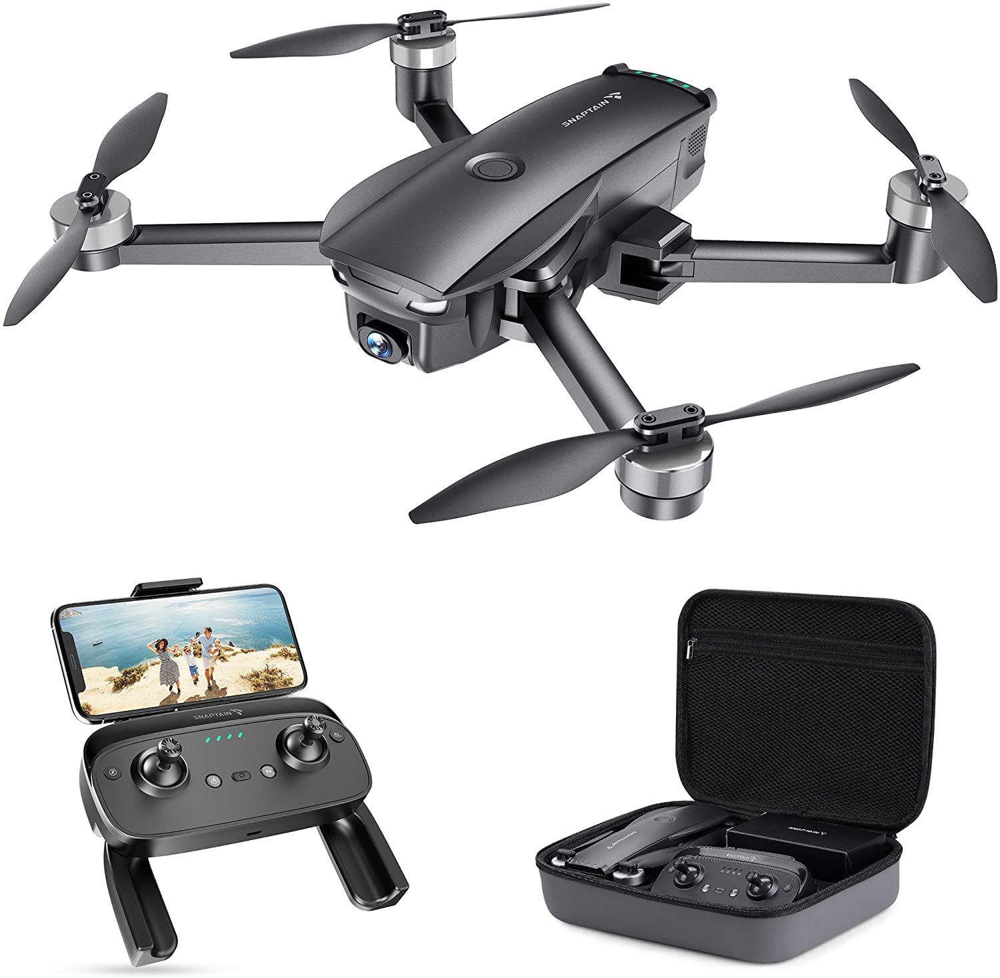
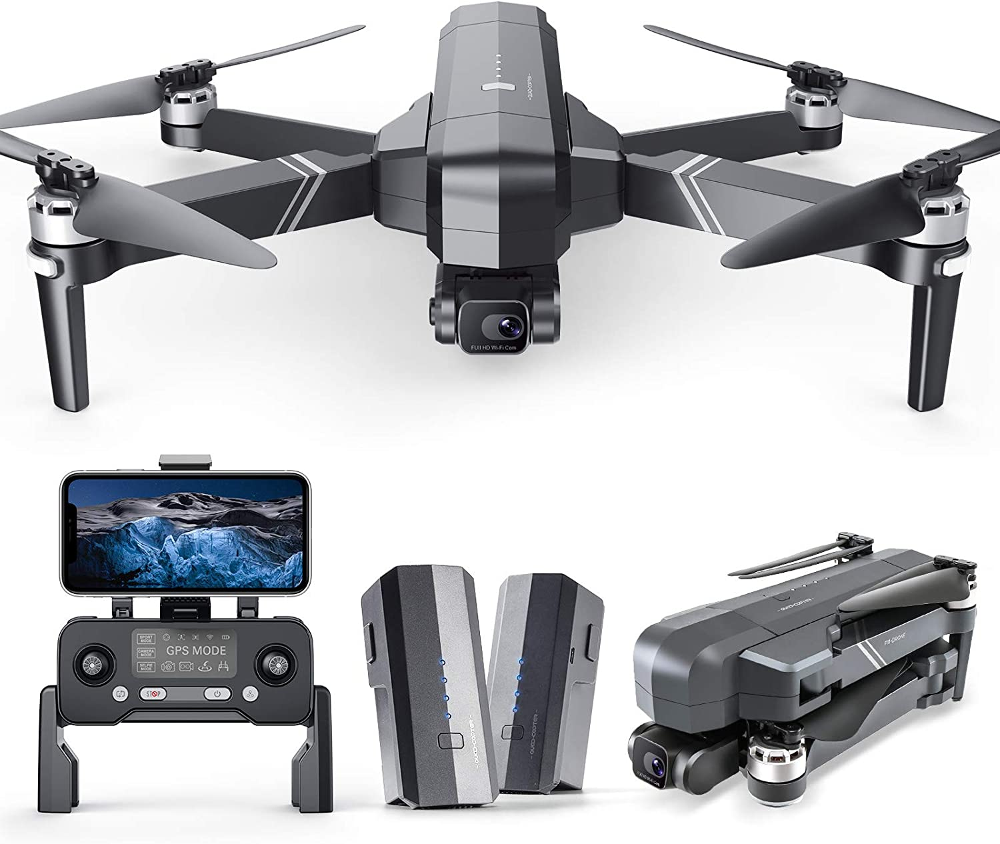

Drone Camera Photography
Drone camera photography is becoming more popular because of the fantastic images that can be created. In the past these photos could only be achieved via helicopter aerial photography which is very expensive and almost out of reach for everyday people like me and you. Since the intoduction of drones we are able to create similar if not better photos. Take a look at these images below to see what you can acheive by investing in one! The images are breathtaking! If you are still on the fence about getting one, take a look at the top 8 pros and cons of getting a camera drone for photography.
Top 10 Pros
- Fun to fly!
- Cheaper than manned aircraft
- Able to fly to difficult areas
- Budget Friendly
- Versatile Flying Capabilities
- Able to capture 360-degree angle shots
- Quality Images
- Precision
Top 10 Cons
- Limited Flight Altitude
- Short Flight Times
- Limited Range
- Possibility to Malfunction
- Weather Dependent
- Privacy Concerns
- Can cause damage to property if it falls
- People who see it may get uncomfortable
Examples of Drone Camera Photography
designyourtrust.com
designyourtrust.com
www.designyourtrust.com
Top 3 budget friendly drones
SNAPTAIN SP7100 4K GPS Drone
Snaptain Drone via the Snaptain Store on Amazon
Go buy it here!
- 4K Camera with Shock Absorption
- Up to 2600 feet range
- Intelligent GPS Return to Home Positioning
- 5G WiFi Transmission
- Price: $212.49
Holy Stone HS120D GPS Drone with Camera

Holy Stone Drone via the Holy Stone Store on Amazon
Go buy it here!
- 2K Ultra HD FPV Camera
- 1080P Video Capture Resolution
- GPS Auto Return
- No FAA Registry Needed
- Price: $159.99
Ruko F11Gim Drones with Camera
Ruko Drone via the Ruko Store on Amazon
Go buy it here!
- 4K Camera with Gimbal + EIS
- Up to 56 Minute Flight Time
- Auto Return to Home
- Level 7 Wind Resistant
- Price: $399.99